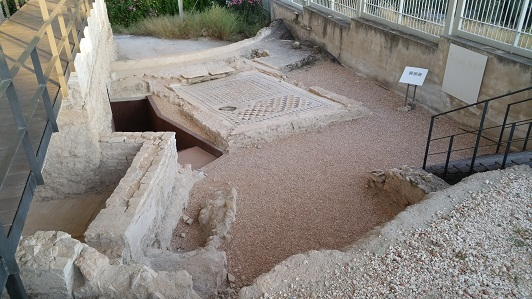

|
Villa romana Fuente Álamo
|
||||
|
Fuente Álamo se localiza a unos 3km de
Puente Genil. Es un yacimiento con tres épocas diferentes con
construcciones de distinto uso, las termas romanas en la primera, la villa
romana en la segunda y la almazara Islámica del siglo X la tercera.
Las termas romanas de
Fuente Álamo, datan de época Julio-Claudia siglo I.

La villa agrícola es de época tardorromana, inicios
del siglo IV. Su época de esplendor fue a
finales del siglo IV y principios de V y se mantuvo habitada hasta
comienzos de la dominación musulmana. El conjunto se compone de dos
residencias, una de las cuales fue seguramente usada como residencia de
verano.
|